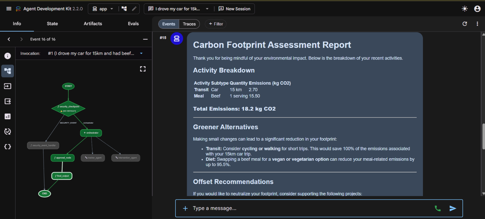
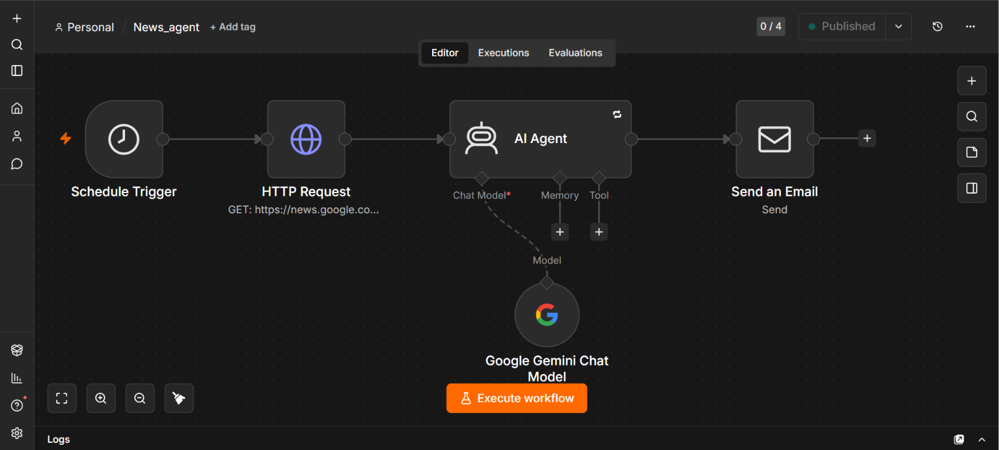
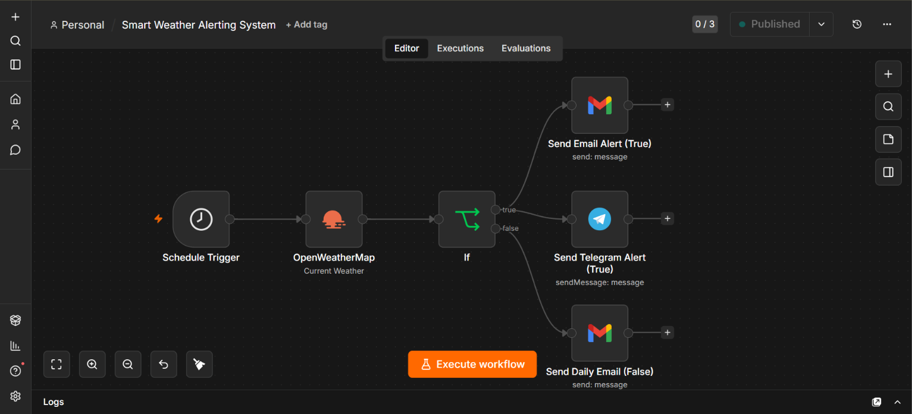
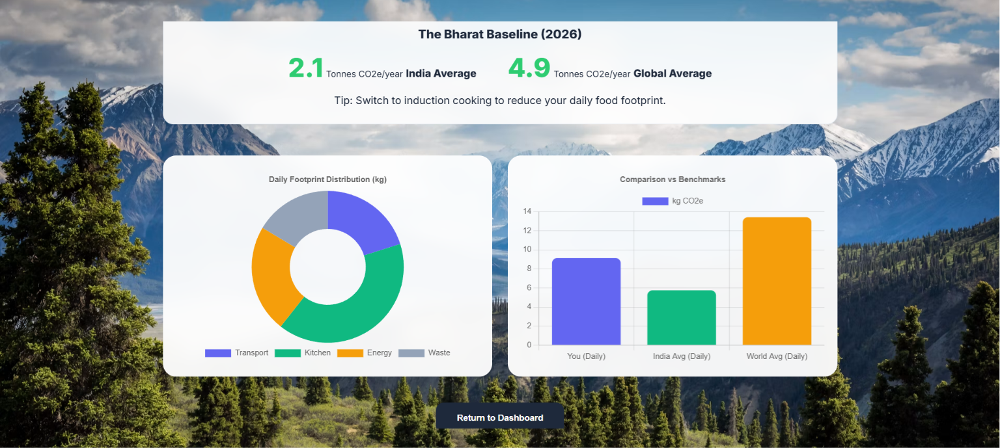

Hi, I am
Vasanth Kumar R
Building autonomous workflows, intelligent deep learning models, and interactive digital systems that solve real-world problems.
About Me
Final-year Computer Science Engineering student (CGPA 8.33), graduating 2026, with an AI/ML engineering focus.
I am a passionate self-learner who builds and deploys projects independently — from multimodal deep learning systems utilizing computer vision and audio processing, to autonomous multi-agent systems and custom automation workflows.
My approach bridges frontend user experience with deep backend models, creating robust applications that bring AI out of scripts and into live, interactive environments.
Graduation Year
2026
Academic Standing
CGPA 8.33
Focus Areas
AI/ML Engineering & Full Stack
Technical Skills
A curation of languages, frameworks, AI libraries, and tools I use to build systems.
Languages
Web & Frontend
AI & ML Engineering


Database
Tools & Automation


Featured Projects
Click links to view interactive codebases and live deployments.
Sentinel Interface — Multisource Emotion Recognition System
Real-time multimodal deep learning platform for student engagement monitoring in e-learning platforms.
Fuses computer vision (MediaPipe 468 landmarks + PyTorch CNN), acoustic processing (HuBERT/Wav2Vec 2.0), and text sentiment analysis (BERT) over asynchronous WebSockets to provide multi-source engagement levels. Features ACID-compliant SQLite session logs, dynamic Chart.js analytics dashboards, and structured CSV export reports.

Eco-Agent
Autonomous environmental assistant built for the "Agents for Good" track. Parses daily natural language activity logs, dynamically evaluates carbon expenditure via a custom MCP server, and delivers live behavioral suggestions.

AI Tech-News Automation Agent
Autonomous multi-source news digestion pipeline. Leverages scheduled n8n triggers to aggregate global tech RSS feeds, runs Gemini 3.1 Flash Lite synthesis for executive distillation, and sends formatted HTML email briefings daily.

Smart Weather Alerting System
Continuous meteorological polling pipeline and conditional threshold evaluator. Ingests live environmental streams via OpenWeatherMap, detects precipitation/temperature anomalies, and dispatches instant multi-channel alerts.

Omni-Trace | Universal Sustainability Tracker
Client-side carbon footprint calculator and analytical dashboard. Computes daily emission metrics directly in-browser using responsive inputs and renders reactive, color-coded Chart.js visual telemetry breakdowns.
Certifications
Professional credentials, courses, and certifications completed.
Professional Experience
Full Stack Development Intern
NoviTech R&D Pvt Ltd
Worked with HTML, CSS, JavaScript, and basic backend concepts to develop client-side interfaces and application structures.
- Gained exposure to project development workflows and standard version control conventions.
- Collaborated within simulated development groups to solve styling challenges and coordinate interface components.
Education
BE, Computer Science and Engineering
Global Institute of Engineering and Technology, Ranipet
PGDCA (Post Graduate Diploma in Computer Applications)
Vellore Computer Training Centre
Get In Touch
Connect with me for developer opportunities, technical projects, or collaborations.